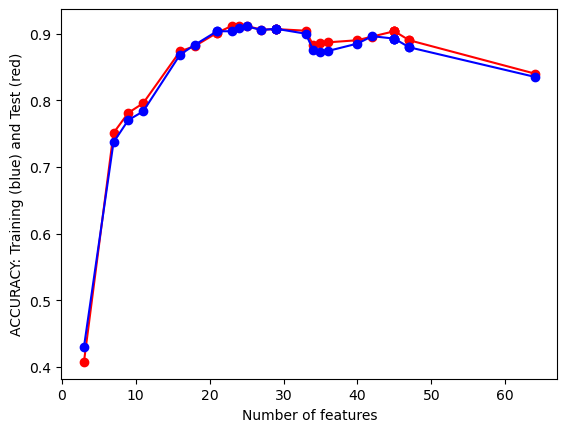
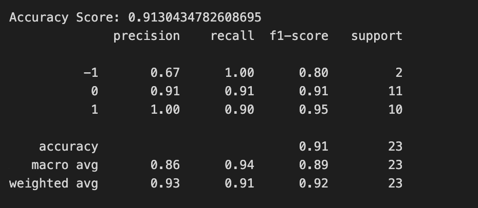
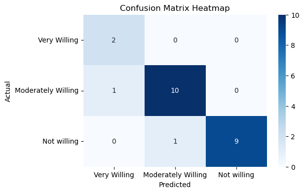
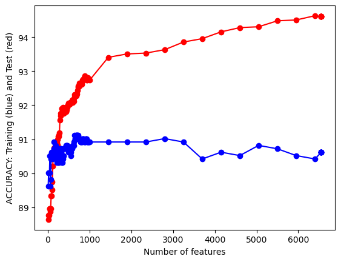
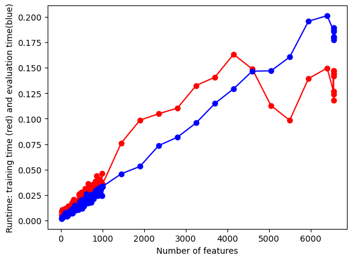
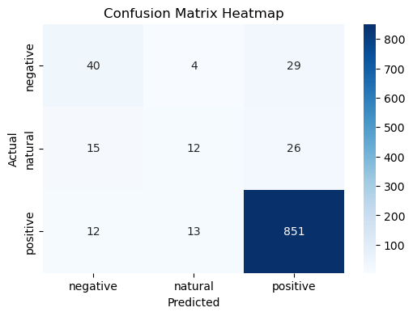

Introduction to Naive Bayes:
Overview
- The process of training the Naive Bayes algorithm is actually the process of solving each a priori probability P(Ai) and conditional probability P(Bj|Ai), and then in the prediction and classification process, it is only necessary to substitute each probability value obtained during the training process into the Bayesian formula, so as to obtain the relative probability of the results of the classification labels under the current features. The one with higher relative probability is naturally used as the predicted label.
Statistics Foundation
- \(P(Y|X) = (P(X|Y) * P(Y))/P(X)\)
- P(A|B) is called the a posteriori probability, for the target to be found
- P(A) is the a priori probability, which can be statistically derived from a large amount of data, or empirically provided when the amount of data is small.
- P(B|A) is the conditional probability, which can be statistically derived from a large amount of data, and is usually given by great likelihood estimation, and is actually also the a priori probability
different variants
Gaussian Naive Bayes: This variant of Naive Bayes is best suited for datasets where the features are continuous and follow a Gaussian or normal distribution. It assigns a Gaussian distribution to each class and predicts the class of a new data point based on these distributions. Common applications include problems that involve continuous variables, as is often found in real-world datasets.
Multinomial Naive Bayes: This type excels with discrete data and finds frequent application in text categorization tasks, where text is converted into word frequency vectors. However, it can also work with tf-idf vectors. It computes the conditional probability of a word given a class, making it a good choice for problems involving discrete data.
Bernoulli Naive Bayes: This method is ideal for binary or boolean features and is typically used in text classification tasks where the presence or absence of a word is more important than its frequency. It assumes that all our features are binary-valued and models the input data with a multivariate Bernoulli distribution.
How to apply to my Project
I will use Naive Bayes Algorithmn to train 2 datasets, the objective for using this is for accurately predicting the lebels for my datasets:
Mobile phone rating: This is a record dataset. There are features like mobiles camera scores, audio scores, display scores, etc, and those related to the customers’ willingness to buy this phone or not. The main goal for training this dataset is for repeict customer’s willingness to buy a phone or not depends on those feature scores.
Iphone 11 reviews: This is a text dataset. The text are customers reviews. The main goal for this data training is by through the reviews, predict the attitutes of the customers.
Record Data – Mobile Phone Rating Training
Prepare Dataset
create labels
I create labels for the mobile phone by its rankings
(code in codes/data-cleaning/mobile_phone_rating.ipynb).
- The top 50 ranking phones is Very Willing
- The 51-100 ranking phones is Moderately Willing
- The 101-last ranking ophones is Not Willing
Split data
(code in codes/naive_bayes/mobile_phone_rating_training)
- I split data into traning set 70%, validation set 15%, and test set 15%.
- 70% in training will increase the accuracy for the model learning. And the rest each 15% for better identify the training results.
Feature Selection
(code in codes/naive_bayes/mobile_phone_rating_training)
According to the number of features, I found out it nearly has no impact on the trainig. - 
Thus I chose to use Vairance Thredhold for this data, after the selection, I find out the optimal thredhold. It turns out the optimal thredhold is 26.51, and the accuracy is around 88%.
Naive Bayes with Labeled Record Data
(code in codes/naive_bayes/mobile_phone_rating_training)
- However, after I tried several times for selecting the vairance thredhold, becuase the feature selection process above elimiating some cornor cases, but there are not that many features in my model, if i eliminating them, it would decrease my model accuracy. So after all, I found the optimal thredhold should be 45, so I choose to use that for my model.
- In that way, the ‘Selfie’ column will be deducted, which make sense because when I did data cleaning process, there are many nulls and I use the mean to fill null.
final result
Evaluation Matrices

Evaluation Metrics - As shown above, the accuracy of my model is 91.3% and which is very high, shows it’s a good model.
- Precision is comparely low for the “not will”, but it’s ok, since the number of that labels are not too many.
- F-1 score and recall performs well.
- Macro Avg: Precision: 86%, Recall: 94%, F1-Score: 89% are all very high schore, shows it’s a good model to fit in.
- Weighted Avg: Precision: 93%, Recall: 91% , F1-Score: 92%, shows it’s a good model to fit in.
- It did not show any overfitting or underfitting,since the test scores perform well.
confusion matrices

Confusion Metrics - As shown above, the accuracy for predicting labels are very high. Only 2 labels are inaccurately predicted.
Conclusion
The model predict my dataset well. After he variance Thredhold feature selection, the accuracy increased from about 88% to 91.3%. Also, the model did not show overfitting/underfitting because of its traning accuracy and test accuracy are all around 90%. Thus this model can well predict how those scores impact people’s buying willingness.
Text Data – iphone 11 Review Training
Prepare Dataset
create labels
I create labels for the mobile phone by its ratings
(code in codes/naive_bayes/iphone_11_review_training.ipynb).
- The top 50 ranking phones is Very Willing
- The 51-100 ranking phones is Moderately Willing
- The 101-last ranking ophones is Not Willing
Split data
(code in codes/naive_bayes/iphone_11_review_training.ipynb).
- I split data into traning set 80%, and test set 20%.
- 80% in training will increase the accuracy for the text model learning. Also, 20% of test dataset is enough for giving good results.
Feature Selection
(code in codes/naive_bayes/iphone_11_review_training.ipynb)

feature selection As shown in the graph, when the number of features close to 600-700, the test and training accuracy score did not improve. And after that, the model indicate it’s overfitting because the taining accuracy is high but test accuracy is not that hight. So our opimal feature selection should around 600-700.

running time As shown in the graph, when the number of features close to 1000 the running time increased a lot
Based on those observation, and also from the accuracy scores of each number of features, I get the optimal number of features are 640. With this feature number, the accuracy and running time are optimal.
Naive Bayes with Labeled Text Data
(code in codes/naive_bayes/iphone_11_review_training.ipynb)

Evaluation Metrics - As shown above, the accuracy of my model is 90.11% and which is very high, shows it’s a good model.
- Macro Avg: Precision: 65%, Recall: 58%, F1-Score: 61%, those scores are comparedly not perform very well, it is because some low performance for the natural(0) class, this is also make sense, because there are not many data related to that class.
- Weighted Avg: Precision: 89%, Recall: 90% , F1-Score: 89%, shows it’s a good model to fit.
confusion matrices

Confusion Metrics - As shown above, the accuracy for predicting right labels are very high.
- In total, 903 data labels were predicted accurately. The model predited well in the positive and negative classes, but did not perform well in the natural class. This is because there are not so many data of natural.
conclusion
The model predict my dataset well. After the number of features selection method, the accuracy can reach 90.11%. However, because the insufficient of data related to natural label class, the prediction to this class did not perform so well as expected.
Also, the model did not show overfitting/underfitting because of its traning accuracy and test accuracy are all around 90%.
Thus, overall the model performed well, and it can based on the text reviews predict poeple’s attitude towards iphone 11 products.